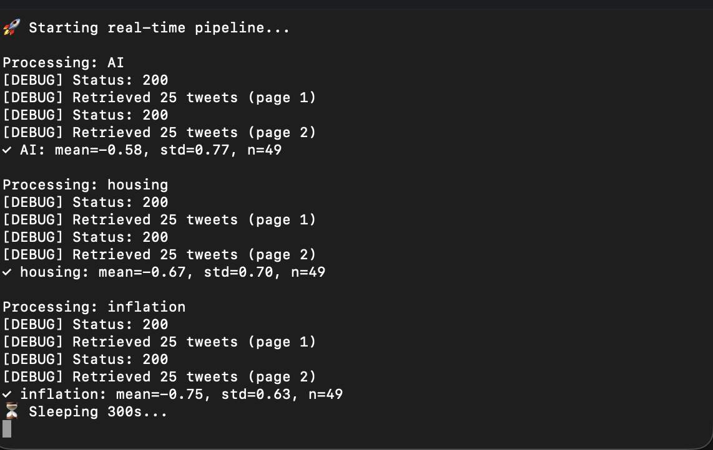
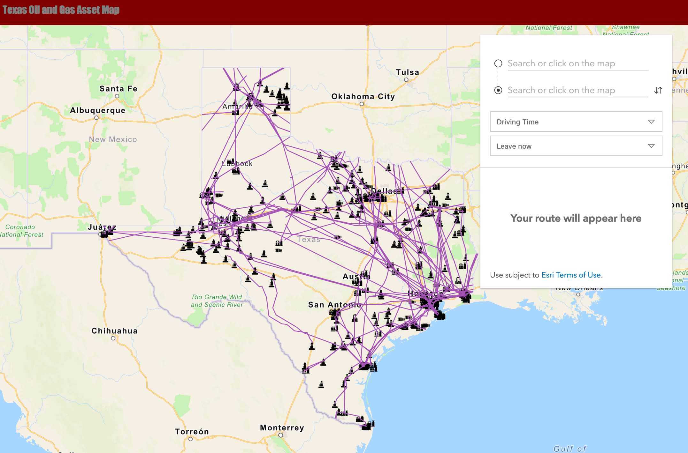
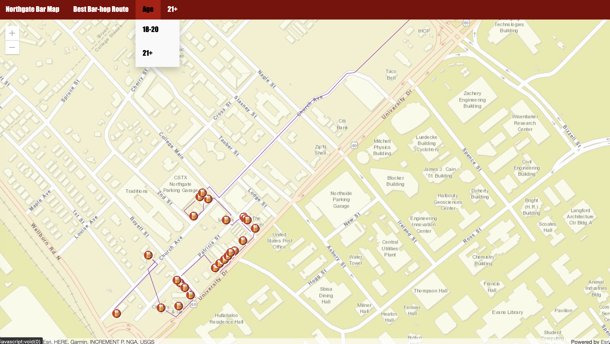

// Portfolio
Featured Projects

X (Twitter) Sentiment Analytics Pipeline
End-to-end social data pipeline built on the X API v2 that ingests tweets by keyword, runs NLP sentiment scoring, stores results in a SQLite database, and surfaces insights through an interactive Streamlit dashboard with rolling averages, volatility tiers, and timestamped CSV export.

Digital Oil Field Capstone — Geospatial Routing Platform
Geospatial routing and infrastructure analysis platform for oil field operations. Built with JavaScript and the ESRI JavaScript API, featuring interactive map layers, asset location tracking, spatial queries, and route optimization displayed in a full-stack web application.
Custom ArcGIS Pro Buffer Analysis Toolbox
Custom ArcPy toolbox that extends ArcGIS Pro with an automated buffer analysis workflow. Accepts a CSV file and geodatabase as inputs and outputs buffered spatial geometries, eliminating manual GIS processing steps for recurring multi-layer analysis tasks.

Interactive Spatial College Station Bars Application
Full-stack spatial web application built with JavaScript and the ESRI JavaScript API. Features interactive map layers, data-driven symbology, spatial queries, and a filtering interface designed to improve spatial data accessibility for non-technical field users.
DHS CBTS — Cross-Border Supply Chain Risk Analytics Platform
Federal research platform contracted under the Department of Homeland Security Centers of Excellence CBTS program to assess COVID-19 impacts on international cross-border supply chains. Led aggregation and analysis of large international datasets, produced monthly analytical reports for federal clients, and developed a stakeholder connection web platform.
 B
BEngineering & IT Workflow Automation Library
Collection of Python, shell, and AutoLISP scripts built to automate real production workflows including MDM deployment server provisioning, automated invoice generation, batch database cleanup, and AutoCAD drafting acceleration scripts actively used in engineering environments.